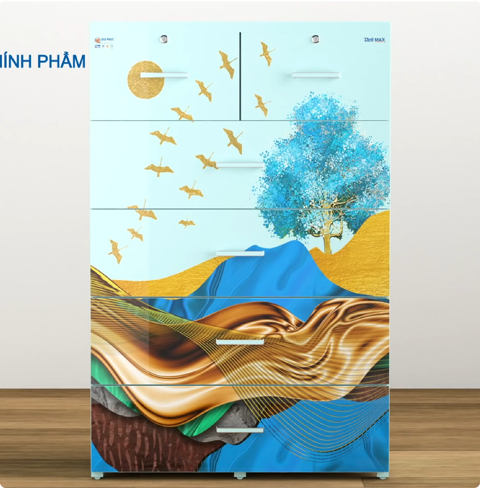
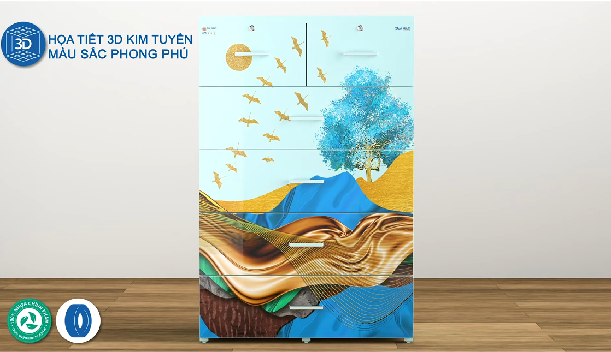

<section class="section additional">
    <div class="additional_wrap">
      <div class="additional_left">
        
        <div class="additional_left--swiper sp additionalSlider swiper">
          <div class="swiper-wrapper">
            <div class="swiper-slide">
              
            </div>
            <div class="swiper-slide">
              
            </div>
          </div>
        </div>
      </div>
      <div class="additional_right">
        <div class="additional_right-txt">
          <h4 class="title">Ngăn tủ rộng chứa được nhiều đồ đạc</h4>
          <p class="text">
            Dung tích chứa đựng của tủ lớn (~0.4 mét khối cho tủ 5 tầng và ~0.5
            mét khối cho tủ 6 tầng) giúp đựng được nhiều đồ hơn gấp 1.5 lần so
            với tủ nhựa ngăn kéo thông thường.
          </p>
          <p class="text">
            Chân tủ được trang bị bánh xe giúp việc di chuyển tủ nhẹ nhàng, tiện
            lợi.
          </p>
        </div>
        <div class="additional_right-img pc">
          
        </div>
      </div>
    </div>
  </section>